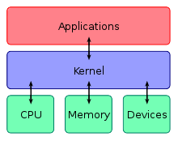

Linux by itself is only a kernel. Meaning you can write software on top of it, but you can't run it only by itself. The Linux kernel manages the memory, disk filesystem, CPU, networking, graphics, peripherals, etc. It is the heart of everything and any other component runs on top of the kernel. In case you are wondering, every OS has a kernel, Windows has a kernel named NT Kernel. Mac has its own Unix-based kernel. We'll talk about Unix later. Android is based on the Linux kernel. Your router and most networking components around the world run Linux kernel. Many Smart devices also run the Linux kernel. Another lesser-known kernel is the BSD kernel. BSD is also a Unix-like kernel.
